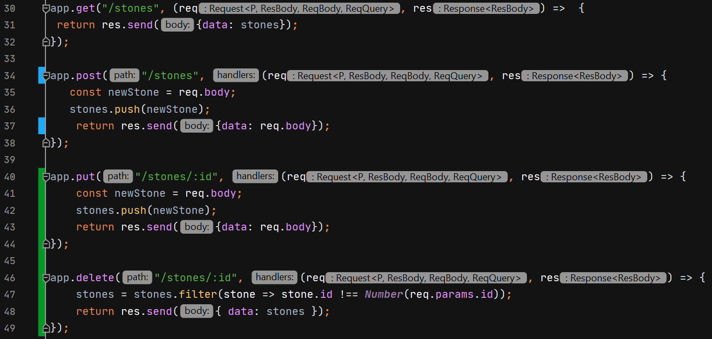
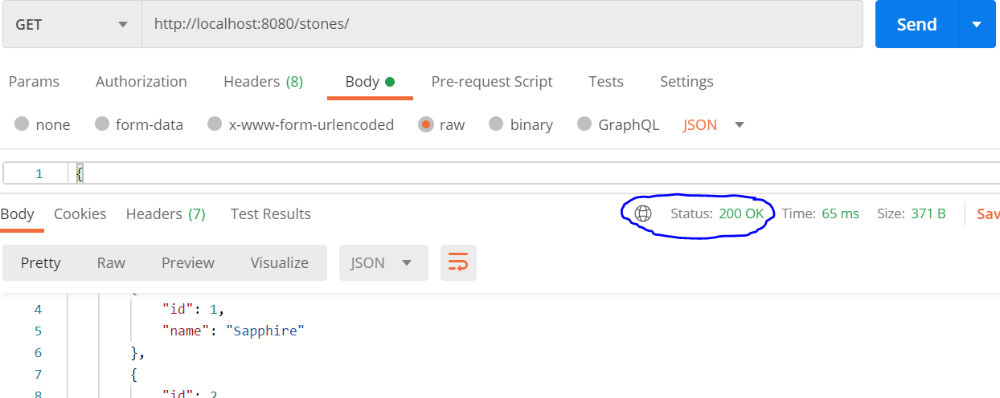
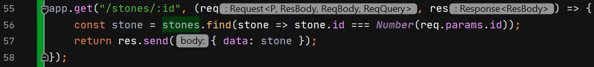

How to create an custom API with express
This is how you create a CRUD API with Express.
Use Postman to test your custom API
PathVariable in Express
In Spring MVC, we use annotation mark @PathVariable to indicate specified URI pathing and brackets to separate URL from URI.
Express.js uses semicolon instead of brackets and there's no need for annotation marks.